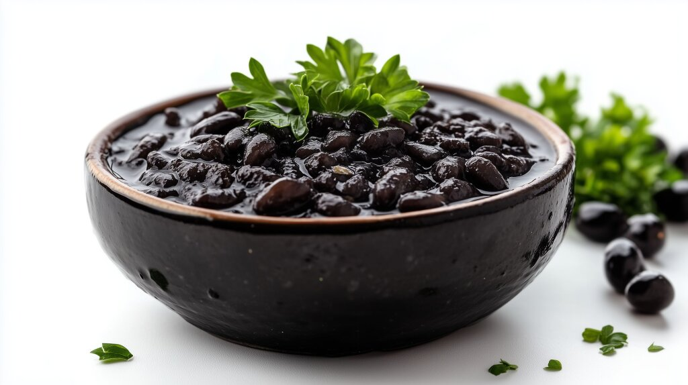

Home
Mama’s Black Beans

Description
These Puerto-Rican style black beans were a staple for me growing up.
My mom originally learned how to make these from her mother, but eventually
mastered doing them her own way.
Ingredients
- 2 large cans black beans
- 1 oz. tocino (salt pork)
- 1 tbsp. red wine vinegar
- 2 bay leaves
- ½ onion
- 8 cuchicha peppers
- 4 cloves garlic
- 1 handful cilantro
- 1 handful parsley
- 2 tbsp. olive oil
- 1 tbsp cumin
- 1 tbsp black pepper
- water
- salt to taste
Steps
A key ingredient in these beans is the sofrito, which is a blend of veggies that gives the dish
it's signature flavor. Make the sofrito before the rest of the dish.
Sofrito
- Add the onion, peppers, garlic, cilantro, parsley, and olive oil to a food processor and process
until fine, but before it's particularly watery.
If you can't fit all of it at once, add a little of everything and process in steps.
- Store all your sofrito. It can be reused for months (don't think about the science).
Black Beans
- Chop the salt pork into lardons
- Set a medium to large pot to medium-high heat (7 out 10)
- Add the salt pork to the pot and cook until the fat renders out,
and you get a little bit of browning.
- Reduce heat to medium (5 out of 10) and add 3 tbsp. of the sofrito to the pot.
- Cook for about 5 minutes
- Add the red wine vinegar, pepper, and cumin.
- Let the vinegar cook for about 2 minutes, then add salt to taste.
- Add both cans of black beans, along with the fluid they're stored with.
- Fill the cans with water and add to the pot until the beans are completely submerged in liquid.
- Add bay leaves.
- Reduce the heat to a simmer and let cook for about an hour, checking in periodically, and adding water if it
gets too dry.
- Give the beans a quarter mash.
- Salt to taste, turn off the heat, and enjoy!